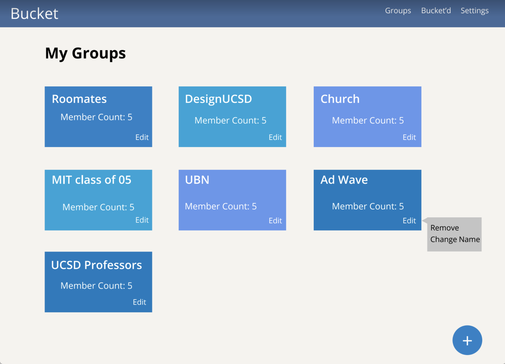
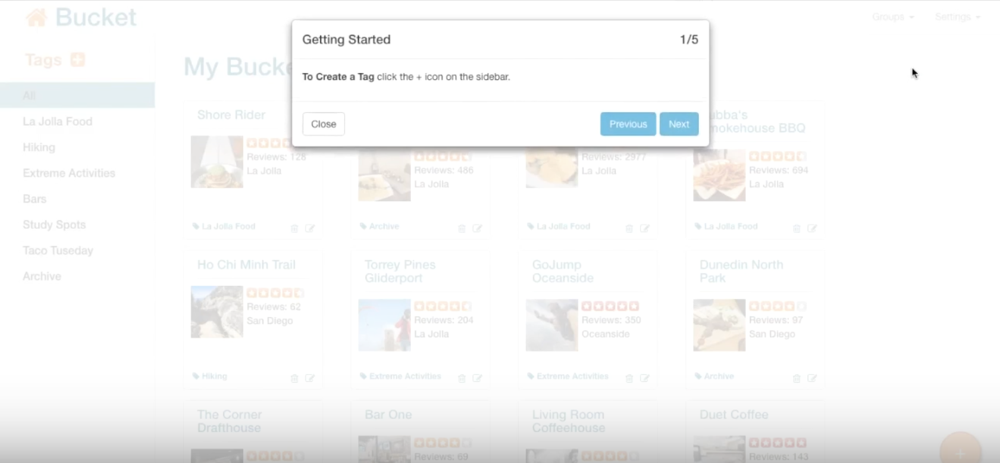
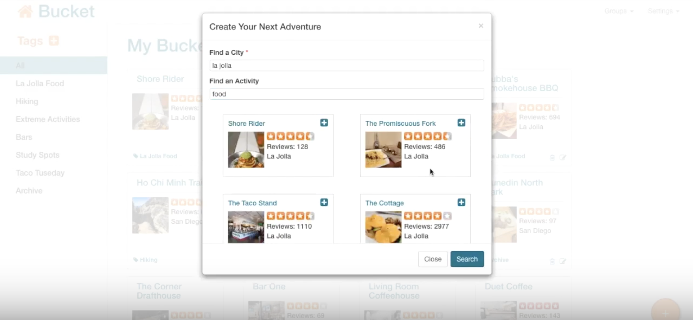
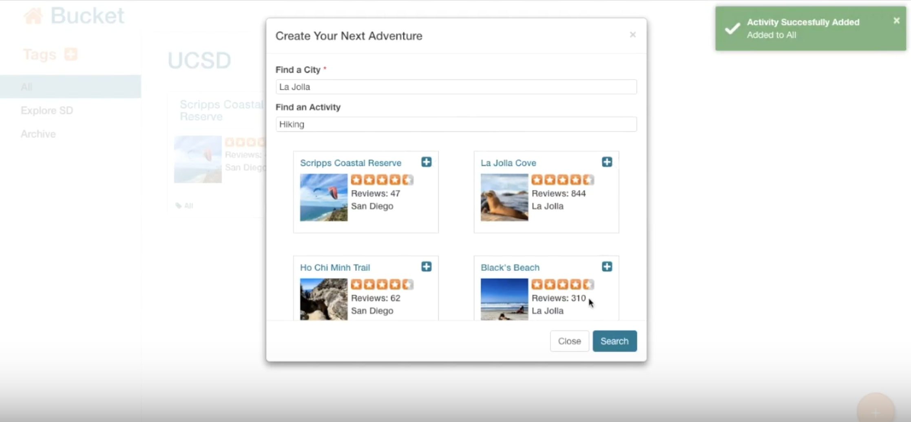
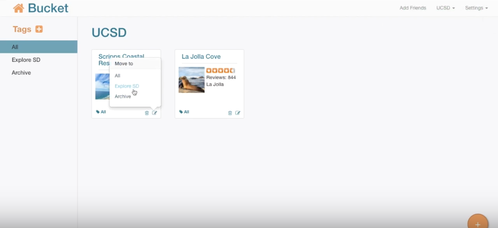
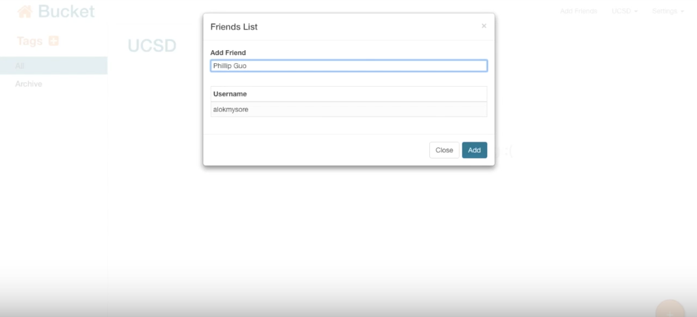

Introduction
Bucket is a responsive web application for the Interaction Design course at UC San Diego that my team and I developed. Bucket is an application to create and track bucket lists collaboratively, letting you work on your own or with your friends and family. Recreating the concept of the traditional bucket list. This course focused on developing a collaborative application that addresses a need in the community and implements an intuitive design.
The Challenge
In our needfinding process, we decided to tackle on the struggle of the students trying to make plans when hanging out for our collaborative application. Friends would often use Facebook messenger or group messaging to suggest possible hang out ideas, which can be overwhelming and confusing if you jumped in an hour later with over 50 messages. How do we make an application that is able to seamlessly organize everyone's input?
My Role
I created the paper prototypes and user testing script, in addition to user testing and contributing to the development.
The Discovery
Research
Before we started designing, we surveyed 20 college students about their process in making plans with their friends and family. We found that Facebook Messenger, Facebook Events, texting, and WeChat were the most popular platforms to make plans. From our user interviews, we found many students would not go back to read the previous messages and just read the last five or so until, they were caught up with what was being currently talked about. So a lot of previous suggestions were lost. Our competitive analysis on Facebook Messenger, Facebook Events, texting, and WeChat all encompassed a messaging feature and a grouping feature. With the exception of Facebook Events, you could not create a quick poll of options to vote on. You could not comment or vote on someone's ideas.
For Bucket, it was important to incorporate a comment and voting system, features that would help college students organize their plans efficiently.
 Our first wireframe sketch that features a top bar to show what plans are most upvoted in the messaging thread.
Our first wireframe sketch that features a top bar to show what plans are most upvoted in the messaging thread.
User Testing
We started off with this first prototype that featured a chat room with a sidebar displaying friends and a navigation bar with activities and their popularity. However, after initial testing, this prototype was still not solving the issue of lost content in group messaging. Based off of the user testing of 9 participants, we found that although users liked the upvotingg feature, they would like to comment on plan sugggestions because often times, they would like to go with a plan idea for a future hangout. We changed our prototype to activity cards using Trello as our inspiration because we have found it very helpful to manage our own development of this project. With our second prototype, the user is initially logged into their own personal bucket list, which contains tags they can personalize. The user can add activities using the Yelp API integrated search to each tag created. Additionally, the user can also create groups with their friends, where the group can create tags and add activities to each tag seamlessly.
 Our second iteration features commenting and categorizing plan suggestions.
Our second iteration features commenting and categorizing plan suggestions.
 Our third iteration based on the feedback of our second prototype featuring groups.
Our initial assumption of this improved prototype being intuitive was wrong based on the user testing of 9 participants. Some obstacles we faced were confusion between creating buckets and creating groups because when logged in, each group's navigation bar has 'Add Friends,' 'Groups', and 'Settings.'
After many iterations and user testing, we found some key painpoints:
- Confusion between 'Groups' and 'Buckets'
- Overwhelmed and did not know where to begin
- Comments were being lost
The Deliverables
Our discoveries made our original idea pivot to a bucket list concept. Our final product is a web application that allows users to collaboratively make and complete bucket lists with friends. The application was created with CSS, HTML, JavaScript, jQuery, Node.js, React, mongoDB, and Yelp API.
 First time users will see these pop up modals that will help them get started.  After creating a tag, a user can use our Yelp API search to find places they would like to add to their virtual bucket list.  From our user testing, we found confimation was important in developing a intuitive applicaton.  The user can move, archive, and delete each card.  Our application offers a collaborative feature, where users can add their friends and families to their tag.The Future
We hope to improve these aspects of the application: Refine Help Modal - to highlight the areas of the application to accomodate the 'Getting Started' tips. Filter/Sorting for Yelp search results - to provide quality search results. Dropdown suggestions for Search - to help users conveniently search. Adding activities across groups - to allow users to add cards to their own personal bucket if they found an activity in a group they wanted to do on their own.